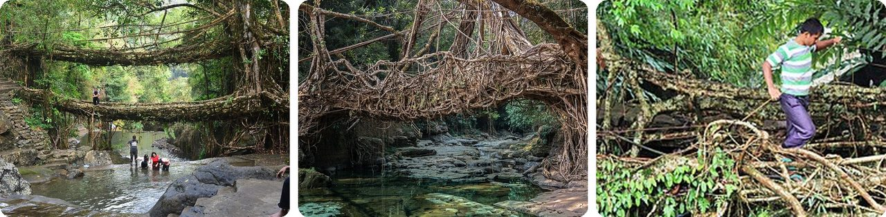
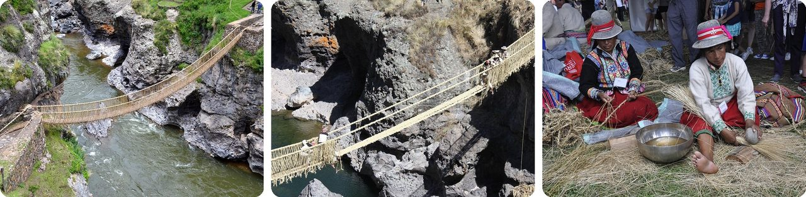
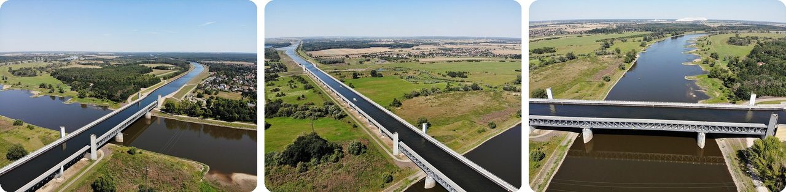
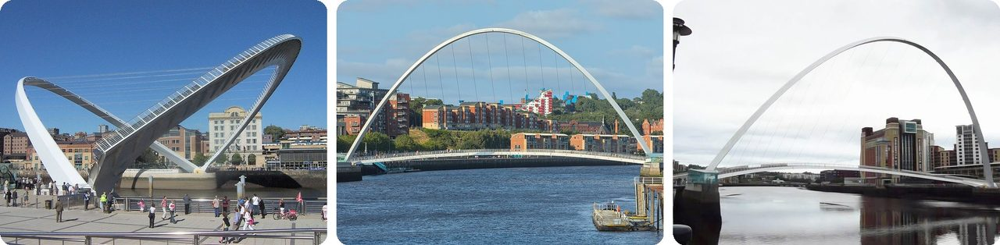
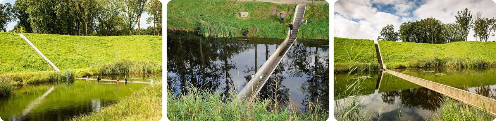
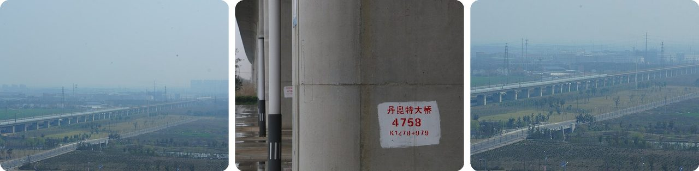
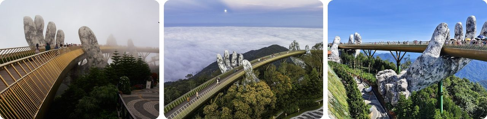
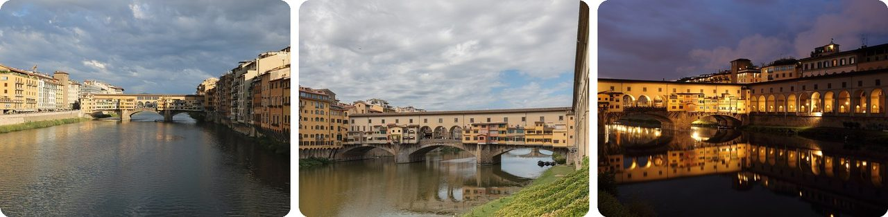
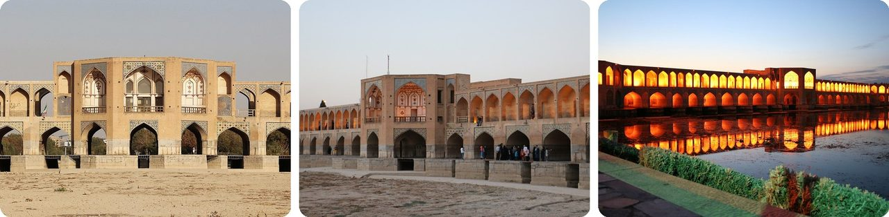
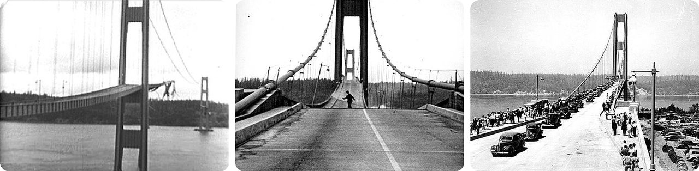

🌍 Top 10 Puentes poco comunes
28 de octubre de 2026
1. 🇮🇳 En Meghalaya, la gente hace crecer puentes con raíces de árboles vivos

En las montañas de Meghalaya, India, los pueblos khasi y jaiñtia no construyen algunos de sus puentes. Los hacen crecer. Toman las raíces colgantes de los árboles de higuera del caucho y las guían de un lado al otro del arroyo, amarrando y torciendo las raíces jóvenes hasta que se unen y crecen juntas.Como el árbol está vivo, las raíces se siguen engrosando, así que el puente se vuelve más fuerte cada año. Un puente de raíces ya maduro puede aguantar 50 personas o más a la vez y durar varios cientos de años. En 2017, unos investigadores ubicaron 75 en el mapa.
En pocas palabras, un puente que se hace más fuerte con los años, en vez de gastarse.
2. 🇵🇪 El puente de paja Q'eswachaka, en Perú, se reconstruye cada año

Q'eswachaka es el último puente inca de cuerdas que sigue en pie, y está hecho de paja. Cuelga sobre el río Apurímac, en el sur de Perú, aunque hay un puente moderno cerca.Cada año, en la segunda semana de junio, familias de cuatro pueblos cercanos tuercen paja para hacer cuerdas. En el río, las cuerdas se trenzan en cables gruesos, otros tejen las esteras para el piso, y entre todos reconstruyen el puente. En tiempos de los incas, este trabajo era una especie de impuesto. Hoy la gente dice que lo hace para honrar a sus antepasados y a la Pachamama (la Madre Tierra).
Cuando la pandemia detuvo el trabajo de cada año, el puente se cayó en marzo de 2021. A las pocas semanas ya estaba de nuevo en pie.
Un puente con cumpleaños cada año, en el que todo el vecindario llega a reconstruirlo.
3. 🇩🇪 El Puente de Agua de Magdeburgo, en Alemania, deja que los barcos naveguen sobre un río

Cerca de Magdeburgo, Alemania, dos canales se encuentran en el río Elba. En vez de hacer que los grandes barcos de carga bajen al río y vuelvan a subir, los ingenieros construyeron un enorme canal lleno de agua que lleva los barcos por encima del río. Es el puente más grande de su tipo en Europa.La idea viene de principios del siglo XX, pero la Segunda Guerra Mundial detuvo la obra en 1942, y después Alemania estuvo dividida durante décadas. Cuando el país se reunificó, la construcción empezó en 1998 y tomó seis años.
Se usaron 68,000 metros cúbicos de concreto, suficiente para llenar unas 27 piscinas olímpicas.
Imagínatelo como un paso elevado para barcos, con un río corriendo por debajo.
4. 🏴 El Puente del Milenio de Gateshead se inclina como un ojo que parpadea

Este puente para peatones y ciclistas sobre el río Tyne, entre Gateshead y Newcastle, en Inglaterra, se abrió en 2001 como el primer puente basculante de la historia. Cuando un barco necesita pasar, seis brazos hidráulicos inclinan todo el puente hacia atrás. El arco baja, el camino sube, y los barcos tienen 25 metros de espacio, tan alto como un edificio de 8 pisos.Mueve el puente entero, de 850,000 kg, tan pesado como casi 600 autos, en unos cuatro minutos. Por cómo se ve mientras gira, la gente le dice el "Puente del Ojo que Parpadea".
Y hay un extra: cada vez que se inclina, también se limpia. La basura del camino rueda hasta unas trampas en cada extremo.
O sea, un puente que se ordena solito con un guiño lento.
5. 🇳🇱 El Puente de Moisés te deja cruzar por dentro de un foso, no por encima

El Fuerte de Roovere, en los Países Bajos, es un viejo fuerte de tierra que formaba parte de una línea de defensa del siglo XVII que usaba el agua para frenar a los enemigos. Cuando volvieron a excavar el foso en 2010, los arquitectos sintieron que un puente por encima iba a arruinar el diseño del viejo fuerte.Así que hicieron un puente que va metido dentro del foso. El agua llega justo hasta los dos lados, y tú caminas por el medio al nivel del agua.
Se llama Puente de Moisés porque parece que parte el agua en dos, como Moisés abriendo el mar en la historia de la Biblia.
Es como caminar por el centro de una piscina a la que se le olvidó llenarse.
6. 🇨🇳 El puente más largo del mundo mide casi cuatro maratones

El Gran Puente Danyang–Kunshan lleva el tren de alta velocidad entre Pekín y Shanghái. Mide 164.8 kilómetros. Eso es casi cuatro maratones seguidos, y desde 2011 es el puente más largo del mundo según los Récords Guinness.Atraviesa tierras planas llenas de arrozales, canales, ríos y lagos, incluido un tramo de 9 kilómetros sobre el agua del lago Yangcheng.
Unas 10,000 personas lo construyeron en cuatro años, y costó unos 8,500 millones de dólares.
Más que un puente, es una vía de tren en zancos que no se acaba nunca.
7. 🇻🇳 El Puente Dorado de Vietnam lo sostienen dos manos gigantes

En lo alto de las colinas de Bà Nà, cerca de Da Nang, Vietnam, un paseo de 150 metros (como una cancha de fútbol y media) se curva casi hasta dar la vuelta sobre sí mismo. Une una estación de teleférico con un jardín, para que los visitantes no tengan que subir una cuesta empinada.Dos manos enormes parecen sostener el puente dorado desde abajo. Se ven como piedra antigua, pero están hechas de fibra de vidrio y malla de alambre. Todo se construyó en menos de un año y abrió en junio de 2018.
Imagínatelo como un listón dorado descansando en las palmas de un gigante.
8. 🇮🇹 El Ponte Vecchio de Florencia tiene tiendas construidas encima

El Ponte Vecchio ("Puente Viejo") de Florencia, Italia, está sobre el río Arno desde más o menos 1345. Hay tiendita tras tiendita a los dos lados, así que cruzarlo se siente como caminar por una calle. Al principio trabajaban ahí carniceros, curtidores y campesinos.En 1565, una norma sacó a los carniceros para que solo orfebres y joyeros pudieran tener tiendas, y esa norma sigue vigente hoy, unos 460 años después. Ese mismo año, la familia Médici, que gobernaba, mandó construir un pasillo techado por encima que unía el ayuntamiento con su palacio al otro lado del río.
En la Segunda Guerra Mundial, fue el único puente de Florencia que las tropas alemanas en retirada no volaron.
En pocas palabras, una calle de tiendas que de casualidad cruza un río.
9. 🇮🇷 El Puente Khaju de Isfahán es puente, presa y lugar de reunión

El Puente Khaju, en Isfahán, Irán, se construyó alrededor de 1650 para el sah Abbas II. También es un azud, un muro bajo que retiene el agua del río. Así que es puente y presa al mismo tiempo.Tiene 23 arcos y mide 133 metros de largo. También se hizo como un lugar para que la gente se reuniera. En el centro hay un pabellón donde el sah se sentaba a disfrutar la vista. De su asiento de piedra hoy solo quedan unos pedazos.
O sea, un puente, una presa y una plaza, todo en uno.
10. 🇺🇸 "Galloping Gertie" se sacudió hasta romperse cuatro meses después de abrir

El puente de Tacoma Narrows, en el estado de Washington, se abrió el 1 de julio de 1940. Desde que lo estaban construyendo, la calzada rebotaba hacia arriba y hacia abajo con el viento, así que los trabajadores le pusieron de apodo "Galloping Gertie" (algo así como "Gertie la Galopante").El 7 de noviembre de 1940, un viento de 64 km/h (40 mph) empezó a retorcer la calzada: el lado izquierdo bajaba mientras el derecho subía, y luego al revés. Cada giro era más grande, hasta que la calzada se rompió y cayó al agua, poco más de cuatro meses después de la inauguración. No murió ninguna persona, pero sí un cocker spaniel llamado Tubby, que se quedó atrapado en un auto sobre el puente.
El derrumbe quedó grabado en video y cambió la forma en que se diseña todo puente largo desde entonces.
Es un puente que bailó hasta hacerse pedazos.
Dato curioso
El pedazo de Galloping Gertie que cayó en el estrecho de Puget en 1940 sigue allá abajo, y ahora funciona como un arrecife artificial, un hogar para la vida marina. En 1950 se abrió un puente nuevo en el mismo lugar, que hasta reutilizó las bases de las torres viejas y los anclajes de los cables. Muchas cosas que se hunden a propósito o por accidente terminan convertidas en arrecifes, así que los barcos hundidos y otros hogares submarinos para peces podrían ser un gran tema para sumergirse después.
Créditos de las fotos (Wikimedia Commons)
- #1: Double decker living root bridge 02.jpg by Chiranjeeb Baul, CC BY-SA 4.0
- #1: Living root bridge, Maghalaya, India1.jpg by Joydeep Chakraborty, CC BY-SA 4.0
- #1: Living root bridge, Meghalaya.jpg by Elbowmacaroni, CC BY-SA 4.0
- #2: Inka suspension bridge Qeswachaka DSC 2730.jpg by Aga Khan (IT), CC BY-SA 4.0
- #2: Puente Qeswachaka.jpg by Ricardo Chirinos Portocarrero, CC0
- #2: 2015 Smithsonian folklife festival DC -Qeswachaka Bridge rope making - 02.jpg by Jarek Tuszyński, CC BY 4.0
- #3: Magdeburg Kanalbrücke aerial view 13.jpg by Olivier Cleynen, CC BY 4.0
- #3: Magdeburg Kanalbrücke aerial view 02.jpg by Olivier Cleynen, CC BY 4.0
- #3: Magdeburg Kanalbrücke aerial view 07.jpg by Olivier Cleynen, CC BY 4.0
- #4: Gateshead millennium bridge open.jpg by Mike1024, Public domain
- #4: Newcastle upon Tyne - Gateshead Millennium Bridge - 1.jpg by Benjamin Smith, CC BY-SA 4.0
- #4: Gateshead Millennium Bridge viewed from the Gateshead bank, Tyne and Wear, England.jpg by Salwa Farwaneh Dameh, CC0
- #5: Digital Eye–2015–Moses's Bridge at Fort de Roovere-7.jpg by Digital Eye, CC BY-SA 4.0
- #5: Loopgraafbrug.JPG by Nokah, CC BY-SA 3.0 nl
- #5: Digital Eye–2015–Moses's Bridge at Fort de Roovere-1.jpg by Digital Eye, CC BY-SA 4.0
- #6: 201603 Danyang-Kunshan grand bridge (wuxi).JPG by MNXANL, CC BY-SA 4.0
- #6: 201604 Danyang-Kunshan mega-bridge near Huaqiao.JPG by MNXANL, CC BY-SA 4.0
- #6: 201603 Danyang-Kunshan grand bridge (wuxi) (cropped).JPG by MNXANL, CC BY-SA 4.0
- #7: Ba Na Hills - BaNa1519.jpg by lumoplank, CC0
- #7: Golden Bridge above the clouds Ba Na Hills Da Nang Vietnam.jpg by Vivu Vietnam, CC BY-SA 4.0
- #7: Golden Bridge at Ba Na Hills 20250718.jpg by DvTor8303, CC0
- #8: Ponte Vecchio from Ponte Santa Trinita.jpg by Ingo Mehling, CC BY-SA 4.0
- #8: Ponte Vecchio sobre el río Arno, Florencia, Italia, 2022-09-19, DD 02.jpg by Diego Delso, CC BY-SA 4.0
- #8: Ponte Vecchio at dusk 1.JPG by Martin Falbisoner, CC BY-SA 3.0
- #9: Khaju Bridge, Isfahan 04.jpg by Bernard Gagnon, CC BY-SA 4.0
- #9: Khaju Bridge photo2.jpg by Ali Ahmadzadeh Heravi, CC BY-SA 4.0
- #9: Khaju Bridje at night.jpg by Gire 3pich2005 with special thanks to Hossein Majidi, Public domain
- #10: Tacoma narrows bridge collapsed.jpg by Barney Elliot First Uploader at de-wp: Guety at de.wikipedia, Public Domain
- #10: Howard Clifford running off the Tacoma Narrows Bridge during collapse, Tacoma, Washington (4861196144).jpg by UW Digital Collections, No restrictions
- #10: Opening day of the Tacoma Narrows Bridge, Tacoma, Washington.jpg by University of Washington Libraries Digital Collections, Public domain


.JPG){kind=link}

_(cropped).JPG){kind=link}


.jpg){kind=link}